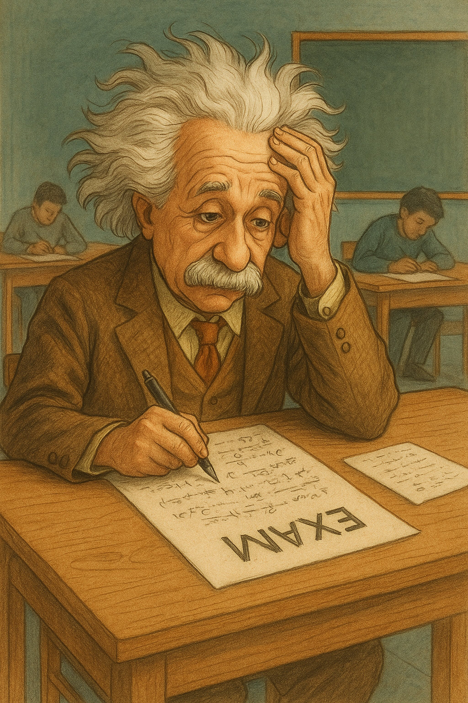

Physics Practice
Your place to master Cambridge Physics 9702!

Welcome! Practise real past‑paper style questions and master every
concept step‑by‑step. Start whenever you’re ready!
Question Score: 0 / 0 | Session Score: 0 / 0
⌨️ Typing shortcuts & tips (click to expand)
Click a button to insert it into the answer box you last typed in:
How to type numbers in standard form:
3.4e22 or 3.4E22 — works like a calculator3.4x10^22 — with a letter x3.4×10^22 — using the × button above- All three are accepted as the same answer
Units: You don’t need to type units in your answer — the marking only checks the number.